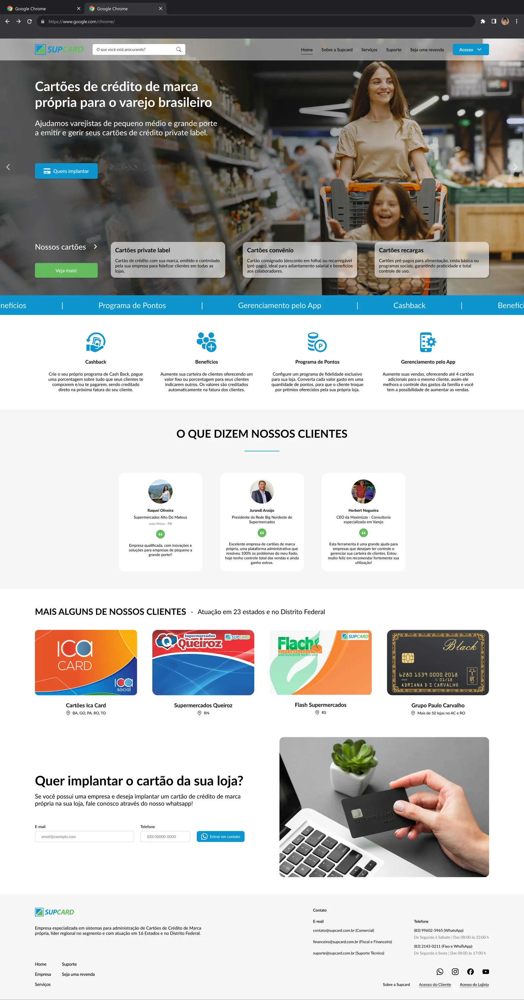
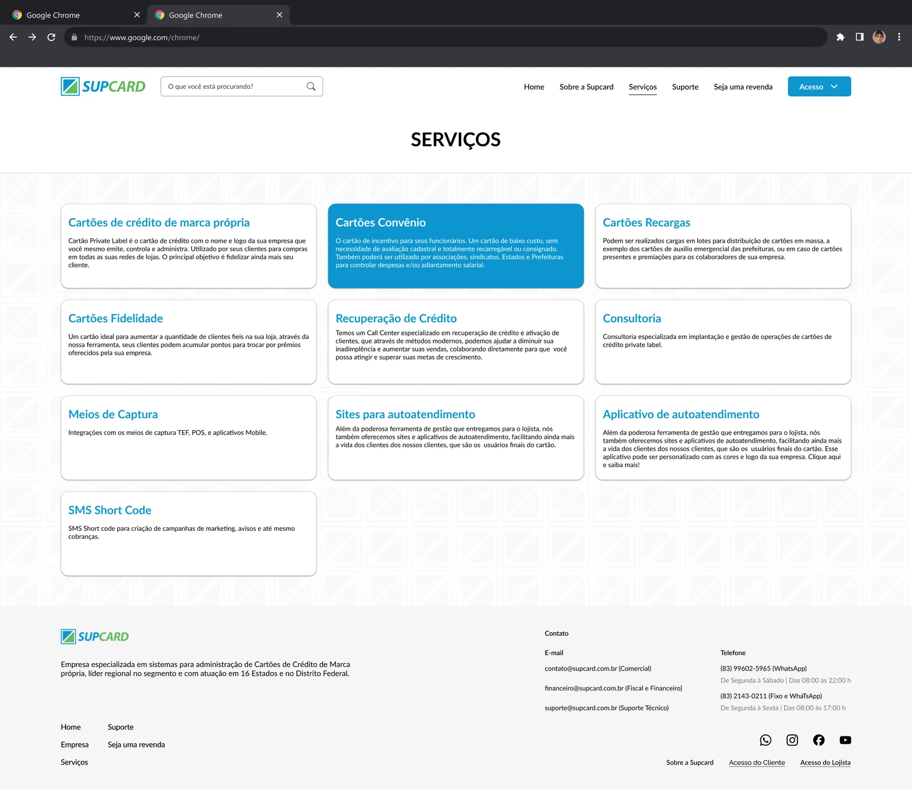
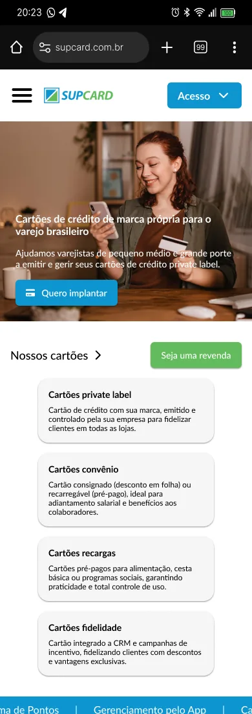

Voltar para projetos
Site da SUPCard
Site institucional para uma empresa que ajuda varejistas de pequeno, médio e grande porte a emitir e gerir cartões de crédito com a própria marca.

Contexto
A SUPCard oferece a estrutura para lojas terem seu próprio cartão de crédito, além de cashback, programa de pontos e gestão pelo app. O site precisava falar com donos de lojas, explicar produtos parecidos entre si e levar ao contato comercial.
Decisões
- Proposta clara no topo: o que a empresa faz e para quem, com um único botão de ação, em banners que mostram o benefício para o lojista.
- Produtos lado a lado: cartões private label, convênio e recarga aparecem como opções comparáveis já na primeira dobra.
- Prova social: depoimentos e cartões de clientes reais, com a região onde atuam.
- Contato curto: um formulário com só e-mail e telefone, e WhatsApp como alternativa.


